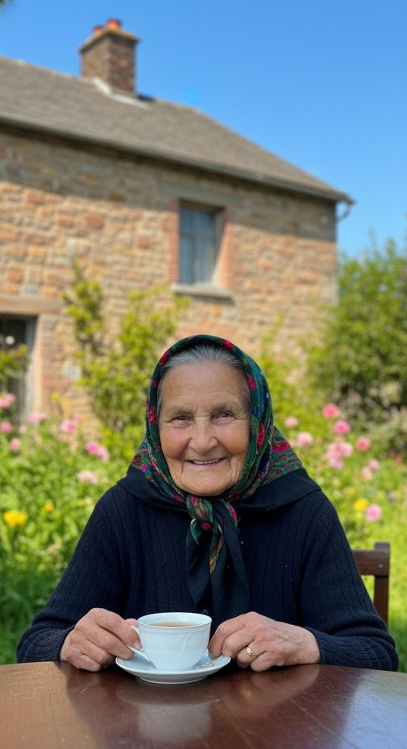

- 01ScrapeEnglish articles
- 02Chunksplit into passages
- 03Embedtext → vectors
- 04StoreChromaDB index
- 05Retrievetop-k for the query
- 06Generategrounded answer
Piyush Sharma — AI Strategy & Innovation at Samsung Research
Fig. 01 — Reverse diffusion
0000 points, 1000 steps.
Move your cursor to add noise.
AI strategy & innovation at Samsung Research. I take models out of papers and put them into products.
(00) Signal
Most AI research never leaves the lab. My work is the bridge — turning research and prototypes into features that ship inside Galaxy phones, used by more than a hundred million people.
- Years in AI & data
- 5+
- Users reached by shipped AI features
- 100M+
- Faster retrieval with an internal RAG system
- 95%
- Research & startup partners
- 8
(01) Work
Selected
work
08 projects

Original
Restored
No.ProjectStackLinks
-
03
LLM Podcast Summarizer
Scrapes and summarises long-form podcasts like Huberman Lab with Llama 3.1.
Llama 3.1 · NLP · Hugging Face
-
04
Hindi Digit Recognition
A CNN that reaches a 96% F1 score on the Hindi-MNIST dataset.
TensorFlow · CNN
-
05
Gesture Recognition
Real-time hand gestures that control operating-system tasks, built with OpenCV.
OpenCV · Computer Vision
-
06
WhatsApp Chat Analyzer
A Streamlit app that turns a WhatsApp export into insights for a group or a single person.
Python · Streamlit · Analysis
-
07
Music Generation RNN
An RNN-LSTM trained across genres to generate personalised melodies with Magenta.
RNN-LSTM · Magenta
-
08
Delhi Housing Prediction
Price prediction for Delhi homes — cleaning, feature engineering and a deployed Streamlit app.
ML · Streamlit
(02) Experience
Where I've
worked
03 roles
-
Mar 2023 — Present
Samsung Research
Manager, AI Strategy & Innovation Part — Noida
- Lead the integration of AI features into flagship Samsung smartphones, including news recommendation and blood glucose.
- Built an internal LLM-based RAG system that cut retrieval time by 95%.
- Run collaborations with IIT Delhi, Kanpur and Ropar, and with startups such as Sarvam AI, Jivi AI, Beatoven.AI, Validsoft and Neural Defend.
-
Oct 2021 — May 2023
Tata Consultancy Services
Data Analyst, System Engineer
- Built financial dashboards for DocuSign with 99% uptime.
- Optimised Snowflake workflows, cutting query times by 25%.
- Received a performance award for problem solving.
-
Internship
AT&T
Data Science Intern
- Built a proof of concept for genre-based music generation with RNN-LSTM.
↳ Partnered with
IIT Delhi✳Sarvam AI✳IIT Kanpur✳
Jivi AI✳IIT Ropar✳Beatoven.AI✳
Validsoft✳Neural Defend✳
(03) About
The short
version
I sit between the people who invent things and the people who ship them.
At Samsung Research Institute in Noida I work on AI/ML innovation and technology strategy — building LLM-based solutions across visual, gaming and health. Most of the job is turning research prototypes into products that scale, untangling the data problems in between, and bringing promising startups into the Samsung ecosystem.
Outside work I keep building: RAG systems, restoration pipelines, and small models that teach me something new.
↳ Education
- 2025 — 26 M.Tech, Artificial Intelligence IIT Jodhpur
- 2021 — 23 MBA, Information Technology Swami Vivekananda Subharti University
- 2016 — 20 B.Tech, Computer Science (ML) Amity University
↳ Toolkit
- Languages
- Python, SQL
- Models
- PyTorch, TensorFlow, OpenCV, Hugging Face
- LLM & agents
- LangChain, CrewAI, RAG, ChromaDB
- Data & cloud
- Azure, Snowflake, Docker, Tableau, Git
- Shipping
- Flask, Streamlit
(04) Contact